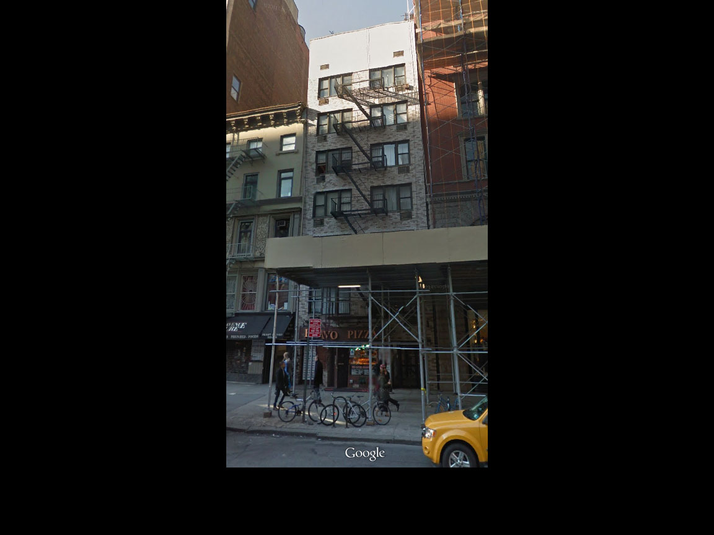
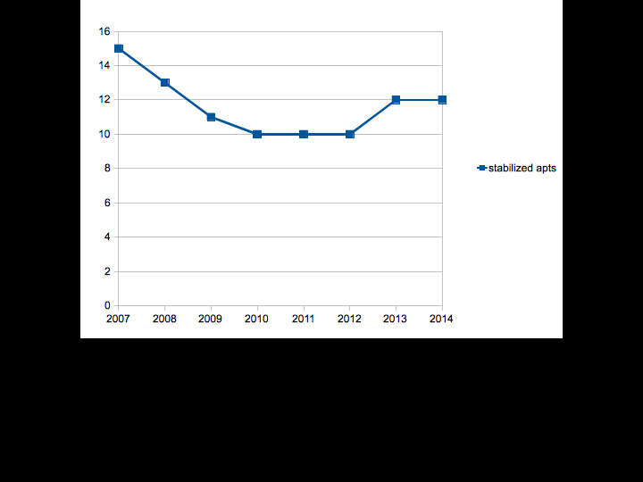
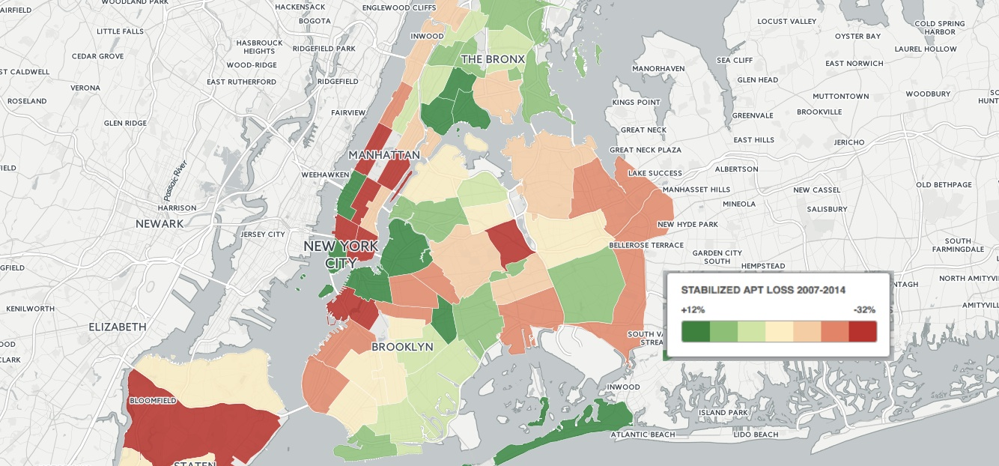

45% of NYC's apts stabilized
39% are market rate
allows for gradual rent increases
protects
2+ million
New Yorkers
biggest protection against unprecedented rents
law full of loopholes
vacancy bonus
20% more rent if tenant moves out
vacancy bonus
encourages harassment
vacancy decontrol
rent > $2,700
apt goes market-rate
vacancy decontrol
erodes # protected apts
voluntary registration
landlords supposed to register stabilized apts
voluntary registration
no penalty if they forget to
what can we do?
what can we do?
try to protect existing stabilized apts
what can we do?
push for better enforcement around loopholes
what can we do?
organize people who don't know their rights
what can we do?
demand more affordable apts in new construction
but how?
little information published
just an (inaccurate) list of buildings
for just one year
not
the number of apts in each buiding
not
over several years as apts leave stabilization
want to know where apts are leaving stabilization?
good luck!
estimates only published aggregated by borough
but...
every tax bill
says how many stabilized apts (if any) are in the building
every tax bill
is published back to 2007 online
as a pdf
so I scraped them all
now we have
now we have
the number of stabilized apts in each of every 44,911 stabilized properties across all five boroughs
now we have
how many stabilized apts were lost in each year from 2007 to 2014 for each building
now we have
annual tax abatement data (421a, J51, etc.) for each building
now we can
see loss over time in a single building

146 Fifth Ave (one block from here)

now we can
break down stabilized apt losses however we want
community board

- State Senate district,
- City Council,
- or any other geography
use with caution
data on tax bills not 100% accurate
since landlords don't have to register stabilized apts, we have to estimate sometimes
still good enough to make statements if you're careful
some ideas
automated letters to state Senators & Assemblypeople
what buildings are losing stabilized apts in their district
investigation into buildings
owned by big political contributors
investigation into landlords
whose buildings are fastest losing stabilized apts
early warning system
for buildings whose landlords stop registering
early warning system
for buildings rapidly losing stabilized apts
simple mapping tool
allowing people to compare losses by different geographies
talk to me after
if you're interested